import pandas as pd
import seaborn as sns
#import matplotlib as mpl
#import matplotlib.pyplot as plt
#import numpy as np
#from scipy import stats
from IPython.display import display
df = pd.read_csv("./assets/DatasaurusDozen-wide.tsv",sep='\t', skiprows=[1])
df.shape
(142, 26)
df
| away | away.1 | bullseye | bullseye.1 | circle | circle.1 | dino | dino.1 | dots | dots.1 | ... | slant_up | slant_up.1 | star | star.1 | v_lines | v_lines.1 | wide_lines | wide_lines.1 | x_shape | x_shape.1 | |
|---|---|---|---|---|---|---|---|---|---|---|---|---|---|---|---|---|---|---|---|---|---|
| 0 | 32.331110 | 61.411101 | 51.203891 | 83.339777 | 55.993030 | 79.277264 | 55.3846 | 97.1795 | 51.147917 | 90.867412 | ... | 47.695201 | 95.241187 | 58.213608 | 91.881892 | 50.481508 | 93.222701 | 65.815540 | 95.588374 | 38.337757 | 92.472719 |
| 1 | 53.421463 | 26.186880 | 58.974470 | 85.499818 | 50.032254 | 79.013071 | 51.5385 | 96.0256 | 50.517126 | 89.102395 | ... | 44.609976 | 93.075835 | 58.196054 | 92.214989 | 50.282406 | 97.609984 | 65.672265 | 91.933402 | 35.751871 | 94.116768 |
| 2 | 63.920202 | 30.832194 | 51.872073 | 85.829738 | 51.288459 | 82.435940 | 46.1538 | 94.4872 | 50.207480 | 85.460047 | ... | 43.856381 | 94.085872 | 58.718231 | 90.310532 | 50.186703 | 99.694680 | 39.002716 | 92.261838 | 32.767218 | 88.518295 |
| 3 | 70.289506 | 82.533649 | 48.179931 | 85.045117 | 51.170537 | 79.165294 | 42.8205 | 91.4103 | 50.069482 | 83.057670 | ... | 41.578929 | 90.303567 | 57.278373 | 89.907607 | 50.326911 | 90.022053 | 37.795303 | 93.532455 | 33.729607 | 88.622266 |
| 4 | 34.118830 | 45.734551 | 41.683200 | 84.017941 | 44.377915 | 78.164628 | 40.7692 | 88.3333 | 50.562846 | 82.937822 | ... | 49.177419 | 96.610532 | 58.082020 | 92.008145 | 50.456207 | 89.987410 | 35.513901 | 89.599190 | 37.238249 | 83.724928 |
| ... | ... | ... | ... | ... | ... | ... | ... | ... | ... | ... | ... | ... | ... | ... | ... | ... | ... | ... | ... | ... | ... |
| 137 | 59.851838 | 72.958391 | 50.967748 | 29.679774 | 39.921363 | 19.701850 | 39.4872 | 25.3846 | 50.533635 | 17.019581 | ... | 31.333244 | 32.538569 | 43.722551 | 19.077328 | 30.487392 | 19.779470 | 33.674442 | 26.090490 | 34.794594 | 13.969683 |
| 138 | 48.960460 | 72.629526 | 91.191054 | 46.674343 | 84.794278 | 55.568650 | 91.2821 | 41.5385 | 77.500907 | 50.166986 | ... | 86.401550 | 38.746933 | 79.326078 | 52.900391 | 89.500180 | 31.978917 | 75.627255 | 37.128752 | 79.221764 | 22.094591 |
| 139 | 46.844855 | 36.791714 | 55.863768 | 85.336487 | 55.662959 | 83.356480 | 50.0000 | 95.7692 | 50.691124 | 87.513960 | ... | 47.442112 | 98.184302 | 56.663974 | 87.940125 | 50.410272 | 98.628369 | 40.610125 | 89.136240 | 36.030880 | 93.121733 |
| 140 | 39.963022 | 42.944915 | 49.280595 | 84.048823 | 50.492248 | 78.997532 | 47.9487 | 95.0000 | 49.990395 | 83.997357 | ... | 46.264741 | 94.116192 | 57.821789 | 90.693167 | 50.325924 | 94.994631 | 39.114366 | 96.481751 | 34.499558 | 86.609985 |
| 141 | 66.704944 | 32.015095 | 43.368502 | 84.332177 | 51.467101 | 79.201845 | 44.1026 | 92.6923 | 50.127182 | 82.990750 | ... | 40.163816 | 87.448672 | 58.243172 | 92.104328 | 50.104032 | 95.088538 | 34.583829 | 89.588902 | 31.106867 | 89.461635 |
142 rows × 26 columns
for i, cx in enumerate(df.columns):
if i%2==0:
cy=cx+'.1'
display(df[[cx,cy]].cov())
| away | away.1 | |
|---|---|---|
| away | 281.227029 | -28.971572 |
| away.1 | -28.971572 | 725.749775 |
| bullseye | bullseye.1 | |
|---|---|---|
| bullseye | 281.207393 | -30.979902 |
| bullseye.1 | -30.979902 | 725.533372 |
| circle | circle.1 | |
|---|---|---|
| circle | 280.898024 | -30.846620 |
| circle.1 | -30.846620 | 725.226844 |
| dino | dino.1 | |
|---|---|---|
| dino | 281.069988 | -29.113933 |
| dino.1 | -29.113933 | 725.515961 |
| dots | dots.1 | |
|---|---|---|
| dots | 281.156953 | -27.247681 |
| dots.1 | -27.247681 | 725.235215 |
| h_lines | h_lines.1 | |
|---|---|---|
| h_lines | 281.095333 | -27.874816 |
| h_lines.1 | -27.874816 | 725.756931 |
| high_lines | high_lines.1 | |
|---|---|---|
| high_lines | 281.122364 | -30.943012 |
| high_lines.1 | -30.943012 | 725.763490 |
| slant_down | slant_down.1 | |
|---|---|---|
| slant_down | 281.124206 | -31.153399 |
| slant_down.1 | -31.153399 | 725.553749 |
| slant_up | slant_up.1 | |
|---|---|---|
| slant_up | 281.194420 | -30.992806 |
| slant_up.1 | -30.992806 | 725.688605 |
| star | star.1 | |
|---|---|---|
| star | 281.197993 | -28.432772 |
| star.1 | -28.432772 | 725.239695 |
| v_lines | v_lines.1 | |
|---|---|---|
| v_lines | 281.231512 | -31.371608 |
| v_lines.1 | -31.371608 | 725.638809 |
| wide_lines | wide_lines.1 | |
|---|---|---|
| wide_lines | 281.232887 | -30.075267 |
| wide_lines.1 | -30.075267 | 725.650560 |
| x_shape | x_shape.1 | |
|---|---|---|
| x_shape | 281.231481 | -29.618418 |
| x_shape.1 | -29.618418 | 725.224991 |
for i, cx in enumerate(df.columns):
if i%2==0:
cy=cx+'.1'
df.plot(cx,cy,kind='scatter')
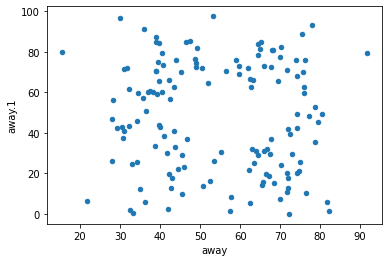
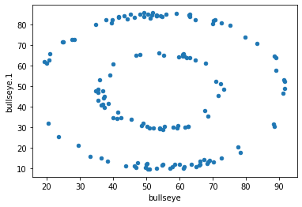
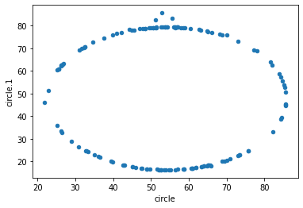
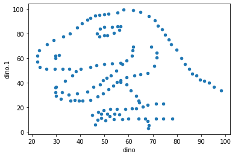
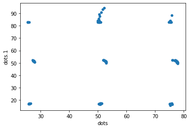
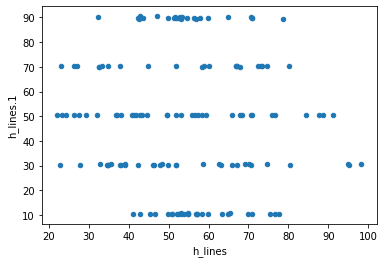
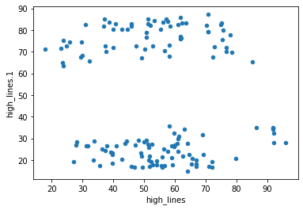
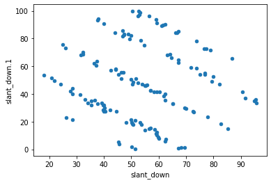
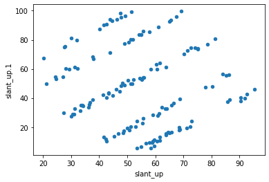
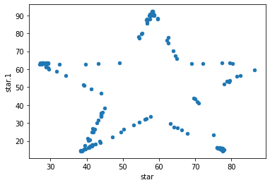
 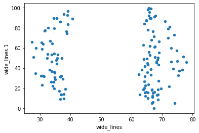
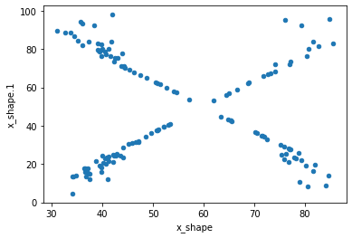
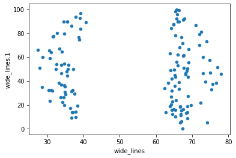
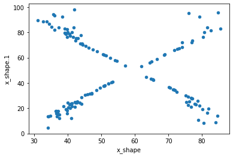
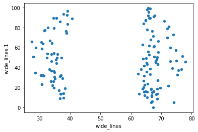
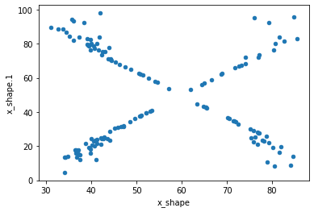
new_df= pd.DataFrame(columns = ["x","y","label"])
df_list = []
for i, cx in enumerate(df.columns):
if i%2==0:
cy=cx+'.1'
temp_df = df[[cx,cy]].rename(columns={cx:'x',cy:'y'})
temp_df['label']=cx
df_list.append(temp_df)
print("appending ", cx)
new_df = pd.concat(df_list)
new_df
appending away
appending bullseye
appending circle
appending dino
appending dots
appending h_lines
appending high_lines
appending slant_down
appending slant_up
appending star
appending v_lines
appending wide_lines
appending x_shape
| x | y | label | |
|---|---|---|---|
| 0 | 32.331110 | 61.411101 | away |
| 1 | 53.421463 | 26.186880 | away |
| 2 | 63.920202 | 30.832194 | away |
| 3 | 70.289506 | 82.533649 | away |
| 4 | 34.118830 | 45.734551 | away |
| ... | ... | ... | ... |
| 137 | 34.794594 | 13.969683 | x_shape |
| 138 | 79.221764 | 22.094591 | x_shape |
| 139 | 36.030880 | 93.121733 | x_shape |
| 140 | 34.499558 | 86.609985 | x_shape |
| 141 | 31.106867 | 89.461635 | x_shape |
1846 rows × 3 columns
ax = sns.violinplot(x="label",y="x", data=new_df)
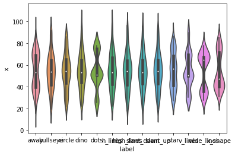
ax = sns.violinplot(x="label",y="y", data=new_df)
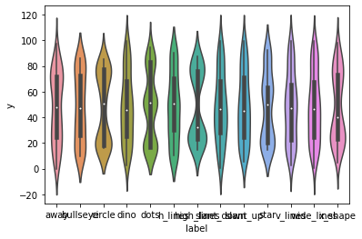
new_df.groupby('label').cov()
| x | y | ||
|---|---|---|---|
| label | |||
| away | x | 281.227029 | -28.971572 |
| y | -28.971572 | 725.749775 | |
| bullseye | x | 281.207393 | -30.979902 |
| y | -30.979902 | 725.533372 | |
| circle | x | 280.898024 | -30.846620 |
| y | -30.846620 | 725.226844 | |
| dino | x | 281.069988 | -29.113933 |
| y | -29.113933 | 725.515961 | |
| dots | x | 281.156953 | -27.247681 |
| y | -27.247681 | 725.235215 | |
| h_lines | x | 281.095333 | -27.874816 |
| y | -27.874816 | 725.756931 | |
| high_lines | x | 281.122364 | -30.943012 |
| y | -30.943012 | 725.763490 | |
| slant_down | x | 281.124206 | -31.153399 |
| y | -31.153399 | 725.553749 | |
| slant_up | x | 281.194420 | -30.992806 |
| y | -30.992806 | 725.688605 | |
| star | x | 281.197993 | -28.432772 |
| y | -28.432772 | 725.239695 | |
| v_lines | x | 281.231512 | -31.371608 |
| y | -31.371608 | 725.638809 | |
| wide_lines | x | 281.232887 | -30.075267 |
| y | -30.075267 | 725.650560 | |
| x_shape | x | 281.231481 | -29.618418 |
| y | -29.618418 | 725.224991 |
new_df.groupby('label').plot('x','y',kind='scatter')
label
away AxesSubplot(0.125,0.125;0.775x0.755)
bullseye AxesSubplot(0.125,0.125;0.775x0.755)
circle AxesSubplot(0.125,0.125;0.775x0.755)
dino AxesSubplot(0.125,0.125;0.775x0.755)
dots AxesSubplot(0.125,0.125;0.775x0.755)
h_lines AxesSubplot(0.125,0.125;0.775x0.755)
high_lines AxesSubplot(0.125,0.125;0.775x0.755)
slant_down AxesSubplot(0.125,0.125;0.775x0.755)
slant_up AxesSubplot(0.125,0.125;0.775x0.755)
star AxesSubplot(0.125,0.125;0.775x0.755)
v_lines AxesSubplot(0.125,0.125;0.775x0.755)
wide_lines AxesSubplot(0.125,0.125;0.775x0.755)
x_shape AxesSubplot(0.125,0.125;0.775x0.755)
dtype: object
new_df.to_csv('assets/DatasaurusDozen-long.csv',index=False)
From Jim¶
df.columns = pd.MultiIndex.from_arrays([open("./assets/DatasaurusDozen-wide.tsv").readline().strip().split("\t"), ["x", "y"] * 13])
df
| away | bullseye | circle | dino | dots | ... | slant_up | star | v_lines | wide_lines | x_shape | |||||||||||
|---|---|---|---|---|---|---|---|---|---|---|---|---|---|---|---|---|---|---|---|---|---|
| x | y | x | y | x | y | x | y | x | y | ... | x | y | x | y | x | y | x | y | x | y | |
| 0 | 32.331110 | 61.411101 | 51.203891 | 83.339777 | 55.993030 | 79.277264 | 55.3846 | 97.1795 | 51.147917 | 90.867412 | ... | 47.695201 | 95.241187 | 58.213608 | 91.881892 | 50.481508 | 93.222701 | 65.815540 | 95.588374 | 38.337757 | 92.472719 |
| 1 | 53.421463 | 26.186880 | 58.974470 | 85.499818 | 50.032254 | 79.013071 | 51.5385 | 96.0256 | 50.517126 | 89.102395 | ... | 44.609976 | 93.075835 | 58.196054 | 92.214989 | 50.282406 | 97.609984 | 65.672265 | 91.933402 | 35.751871 | 94.116768 |
| 2 | 63.920202 | 30.832194 | 51.872073 | 85.829738 | 51.288459 | 82.435940 | 46.1538 | 94.4872 | 50.207480 | 85.460047 | ... | 43.856381 | 94.085872 | 58.718231 | 90.310532 | 50.186703 | 99.694680 | 39.002716 | 92.261838 | 32.767218 | 88.518295 |
| 3 | 70.289506 | 82.533649 | 48.179931 | 85.045117 | 51.170537 | 79.165294 | 42.8205 | 91.4103 | 50.069482 | 83.057670 | ... | 41.578929 | 90.303567 | 57.278373 | 89.907607 | 50.326911 | 90.022053 | 37.795303 | 93.532455 | 33.729607 | 88.622266 |
| 4 | 34.118830 | 45.734551 | 41.683200 | 84.017941 | 44.377915 | 78.164628 | 40.7692 | 88.3333 | 50.562846 | 82.937822 | ... | 49.177419 | 96.610532 | 58.082020 | 92.008145 | 50.456207 | 89.987410 | 35.513901 | 89.599190 | 37.238249 | 83.724928 |
| ... | ... | ... | ... | ... | ... | ... | ... | ... | ... | ... | ... | ... | ... | ... | ... | ... | ... | ... | ... | ... | ... |
| 137 | 59.851838 | 72.958391 | 50.967748 | 29.679774 | 39.921363 | 19.701850 | 39.4872 | 25.3846 | 50.533635 | 17.019581 | ... | 31.333244 | 32.538569 | 43.722551 | 19.077328 | 30.487392 | 19.779470 | 33.674442 | 26.090490 | 34.794594 | 13.969683 |
| 138 | 48.960460 | 72.629526 | 91.191054 | 46.674343 | 84.794278 | 55.568650 | 91.2821 | 41.5385 | 77.500907 | 50.166986 | ... | 86.401550 | 38.746933 | 79.326078 | 52.900391 | 89.500180 | 31.978917 | 75.627255 | 37.128752 | 79.221764 | 22.094591 |
| 139 | 46.844855 | 36.791714 | 55.863768 | 85.336487 | 55.662959 | 83.356480 | 50.0000 | 95.7692 | 50.691124 | 87.513960 | ... | 47.442112 | 98.184302 | 56.663974 | 87.940125 | 50.410272 | 98.628369 | 40.610125 | 89.136240 | 36.030880 | 93.121733 |
| 140 | 39.963022 | 42.944915 | 49.280595 | 84.048823 | 50.492248 | 78.997532 | 47.9487 | 95.0000 | 49.990395 | 83.997357 | ... | 46.264741 | 94.116192 | 57.821789 | 90.693167 | 50.325924 | 94.994631 | 39.114366 | 96.481751 | 34.499558 | 86.609985 |
| 141 | 66.704944 | 32.015095 | 43.368502 | 84.332177 | 51.467101 | 79.201845 | 44.1026 | 92.6923 | 50.127182 | 82.990750 | ... | 40.163816 | 87.448672 | 58.243172 | 92.104328 | 50.104032 | 95.088538 | 34.583829 | 89.588902 | 31.106867 | 89.461635 |
142 rows × 26 columns
df.stack()
| away | bullseye | circle | dino | dots | h_lines | high_lines | slant_down | slant_up | star | v_lines | wide_lines | x_shape | ||
|---|---|---|---|---|---|---|---|---|---|---|---|---|---|---|
| 0 | x | 32.331110 | 51.203891 | 55.993030 | 55.3846 | 51.147917 | 53.366567 | 57.613234 | 52.872021 | 47.695201 | 58.213608 | 50.481508 | 65.815540 | 38.337757 |
| y | 61.411101 | 83.339777 | 79.277264 | 97.1795 | 90.867412 | 90.208030 | 83.905171 | 97.343223 | 95.241187 | 91.881892 | 93.222701 | 95.588374 | 92.472719 | |
| 1 | x | 53.421463 | 58.974470 | 50.032254 | 51.5385 | 50.517126 | 52.801979 | 51.274392 | 59.014144 | 44.609976 | 58.196054 | 50.282406 | 65.672265 | 35.751871 |
| y | 26.186880 | 85.499818 | 79.013071 | 96.0256 | 89.102395 | 90.088065 | 82.817983 | 93.574875 | 93.075835 | 92.214989 | 97.609984 | 91.933402 | 94.116768 | |
| 2 | x | 63.920202 | 51.872073 | 51.288459 | 46.1538 | 50.207480 | 47.054130 | 50.753898 | 56.375109 | 43.856381 | 58.718231 | 50.186703 | 39.002716 | 32.767218 |
| ... | ... | ... | ... | ... | ... | ... | ... | ... | ... | ... | ... | ... | ... | ... |
| 139 | y | 36.791714 | 85.336487 | 83.356480 | 95.7692 | 87.513960 | 89.704317 | 78.950839 | 99.613472 | 98.184302 | 87.940125 | 98.628369 | 89.136240 | 93.121733 |
| 140 | x | 39.963022 | 49.280595 | 50.492248 | 47.9487 | 49.990395 | 51.406787 | 51.183467 | 53.178614 | 46.264741 | 57.821789 | 50.325924 | 39.114366 | 34.499558 |
| y | 42.944915 | 84.048823 | 78.997532 | 95.0000 | 83.997357 | 89.712139 | 85.128855 | 98.603861 | 94.116192 | 90.693167 | 94.994631 | 96.481751 | 86.609985 | |
| 141 | x | 66.704944 | 43.368502 | 51.467101 | 44.1026 | 50.127182 | 43.588468 | 40.863855 | 37.627053 | 40.163816 | 58.243172 | 50.104032 | 34.583829 | 31.106867 |
| y | 32.015095 | 84.332177 | 79.201845 | 92.6923 | 82.990750 | 89.745537 | 82.926145 | 93.060673 | 87.448672 | 92.104328 | 95.088538 | 89.588902 | 89.461635 |
284 rows × 13 columns
df.stack().xs("x", level=1)
| away | bullseye | circle | dino | dots | h_lines | high_lines | slant_down | slant_up | star | v_lines | wide_lines | x_shape | |
|---|---|---|---|---|---|---|---|---|---|---|---|---|---|
| 0 | 32.331110 | 51.203891 | 55.993030 | 55.3846 | 51.147917 | 53.366567 | 57.613234 | 52.872021 | 47.695201 | 58.213608 | 50.481508 | 65.815540 | 38.337757 |
| 1 | 53.421463 | 58.974470 | 50.032254 | 51.5385 | 50.517126 | 52.801979 | 51.274392 | 59.014144 | 44.609976 | 58.196054 | 50.282406 | 65.672265 | 35.751871 |
| 2 | 63.920202 | 51.872073 | 51.288459 | 46.1538 | 50.207480 | 47.054130 | 50.753898 | 56.375109 | 43.856381 | 58.718231 | 50.186703 | 39.002716 | 32.767218 |
| 3 | 70.289506 | 48.179931 | 51.170537 | 42.8205 | 50.069482 | 42.448434 | 37.021184 | 37.839200 | 41.578929 | 57.278373 | 50.326911 | 37.795303 | 33.729607 |
| 4 | 34.118830 | 41.683200 | 44.377915 | 40.7692 | 50.562846 | 42.704036 | 42.881755 | 39.885373 | 49.177419 | 58.082020 | 50.456207 | 35.513901 | 37.238249 |
| ... | ... | ... | ... | ... | ... | ... | ... | ... | ... | ... | ... | ... | ... |
| 137 | 59.851838 | 50.967748 | 39.921363 | 39.4872 | 50.533635 | 42.224120 | 37.949784 | 39.596501 | 31.333244 | 43.722551 | 30.487392 | 33.674442 | 34.794594 |
| 138 | 48.960460 | 91.191054 | 84.794278 | 91.2821 | 77.500907 | 87.698464 | 86.504391 | 95.593416 | 86.401550 | 79.326078 | 89.500180 | 75.627255 | 79.221764 |
| 139 | 46.844855 | 55.863768 | 55.662959 | 50.0000 | 50.691124 | 52.360331 | 50.815485 | 52.772288 | 47.442112 | 56.663974 | 50.410272 | 40.610125 | 36.030880 |
| 140 | 39.963022 | 49.280595 | 50.492248 | 47.9487 | 49.990395 | 51.406787 | 51.183467 | 53.178614 | 46.264741 | 57.821789 | 50.325924 | 39.114366 | 34.499558 |
| 141 | 66.704944 | 43.368502 | 51.467101 | 44.1026 | 50.127182 | 43.588468 | 40.863855 | 37.627053 | 40.163816 | 58.243172 | 50.104032 | 34.583829 | 31.106867 |
142 rows × 13 columns
even easier:¶
https://stackoverflow.com/a/47630980/1623645
df = pd.read_csv("./assets/DatasaurusDozen-wide.tsv",sep='\t', header=[0,1])
df
| away | bullseye | circle | dino | dots | ... | slant_up | star | v_lines | wide_lines | x_shape | |||||||||||
|---|---|---|---|---|---|---|---|---|---|---|---|---|---|---|---|---|---|---|---|---|---|
| x | y | x | y | x | y | x | y | x | y | ... | x | y | x | y | x | y | x | y | x | y | |
| 0 | 32.331110 | 61.411101 | 51.203891 | 83.339777 | 55.993030 | 79.277264 | 55.3846 | 97.1795 | 51.147917 | 90.867412 | ... | 47.695201 | 95.241187 | 58.213608 | 91.881892 | 50.481508 | 93.222701 | 65.815540 | 95.588374 | 38.337757 | 92.472719 |
| 1 | 53.421463 | 26.186880 | 58.974470 | 85.499818 | 50.032254 | 79.013071 | 51.5385 | 96.0256 | 50.517126 | 89.102395 | ... | 44.609976 | 93.075835 | 58.196054 | 92.214989 | 50.282406 | 97.609984 | 65.672265 | 91.933402 | 35.751871 | 94.116768 |
| 2 | 63.920202 | 30.832194 | 51.872073 | 85.829738 | 51.288459 | 82.435940 | 46.1538 | 94.4872 | 50.207480 | 85.460047 | ... | 43.856381 | 94.085872 | 58.718231 | 90.310532 | 50.186703 | 99.694680 | 39.002716 | 92.261838 | 32.767218 | 88.518295 |
| 3 | 70.289506 | 82.533649 | 48.179931 | 85.045117 | 51.170537 | 79.165294 | 42.8205 | 91.4103 | 50.069482 | 83.057670 | ... | 41.578929 | 90.303567 | 57.278373 | 89.907607 | 50.326911 | 90.022053 | 37.795303 | 93.532455 | 33.729607 | 88.622266 |
| 4 | 34.118830 | 45.734551 | 41.683200 | 84.017941 | 44.377915 | 78.164628 | 40.7692 | 88.3333 | 50.562846 | 82.937822 | ... | 49.177419 | 96.610532 | 58.082020 | 92.008145 | 50.456207 | 89.987410 | 35.513901 | 89.599190 | 37.238249 | 83.724928 |
| ... | ... | ... | ... | ... | ... | ... | ... | ... | ... | ... | ... | ... | ... | ... | ... | ... | ... | ... | ... | ... | ... |
| 137 | 59.851838 | 72.958391 | 50.967748 | 29.679774 | 39.921363 | 19.701850 | 39.4872 | 25.3846 | 50.533635 | 17.019581 | ... | 31.333244 | 32.538569 | 43.722551 | 19.077328 | 30.487392 | 19.779470 | 33.674442 | 26.090490 | 34.794594 | 13.969683 |
| 138 | 48.960460 | 72.629526 | 91.191054 | 46.674343 | 84.794278 | 55.568650 | 91.2821 | 41.5385 | 77.500907 | 50.166986 | ... | 86.401550 | 38.746933 | 79.326078 | 52.900391 | 89.500180 | 31.978917 | 75.627255 | 37.128752 | 79.221764 | 22.094591 |
| 139 | 46.844855 | 36.791714 | 55.863768 | 85.336487 | 55.662959 | 83.356480 | 50.0000 | 95.7692 | 50.691124 | 87.513960 | ... | 47.442112 | 98.184302 | 56.663974 | 87.940125 | 50.410272 | 98.628369 | 40.610125 | 89.136240 | 36.030880 | 93.121733 |
| 140 | 39.963022 | 42.944915 | 49.280595 | 84.048823 | 50.492248 | 78.997532 | 47.9487 | 95.0000 | 49.990395 | 83.997357 | ... | 46.264741 | 94.116192 | 57.821789 | 90.693167 | 50.325924 | 94.994631 | 39.114366 | 96.481751 | 34.499558 | 86.609985 |
| 141 | 66.704944 | 32.015095 | 43.368502 | 84.332177 | 51.467101 | 79.201845 | 44.1026 | 92.6923 | 50.127182 | 82.990750 | ... | 40.163816 | 87.448672 | 58.243172 | 92.104328 | 50.104032 | 95.088538 | 34.583829 | 89.588902 | 31.106867 | 89.461635 |
142 rows × 26 columns